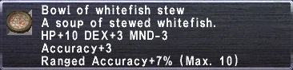

Level 75 reference · Zenith rules


StatisticsWhitefish Stew
|
Other UsesGuild Points Value: None
| ||
Synthesis Recipes
|
|||
How to Obtain
| Auction House Category: Food > Meals > Soups ( | ) |
Merchants
Price: 6064 - 6855 gil Name Location Type Taajiji Windurst Waters N. (F-10) Standard Merchant
- Windurst conquest 2nd+
Adapted from Eden Wiki: Whitefish Stew · Contributors and history · CC BY-SA 4.0. Revision 46560. Layout, links and optional background text adapted for Zenith.